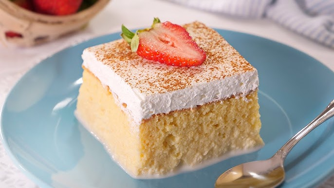

Postres típicos

Conchas
Pan dulce clásico con cubierta crujiente y sabor a vainilla o chocolate.

Pastel de Tres Leches
Bizcocho esponjoso bañado en una mezcla de tres tipos de leche.

Churros
Deliciosos y crujientes, espolvoreados con azúcar y canela.

Flan
Postre suave de huevo y leche con caramelo por encima.